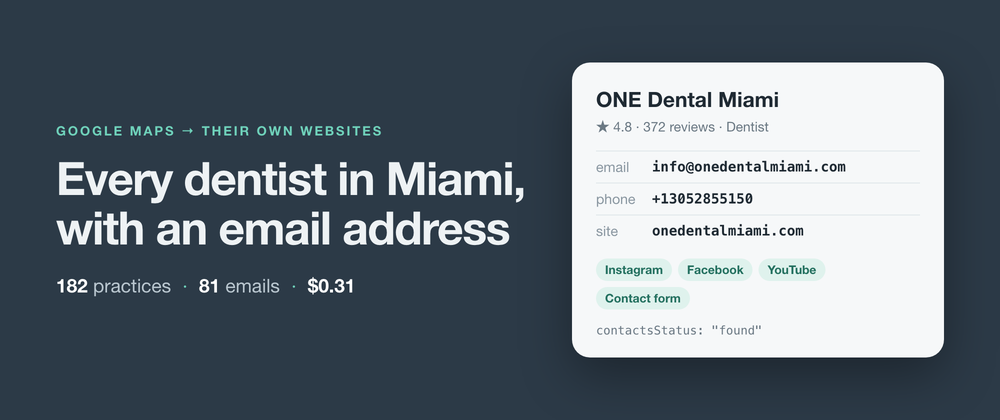
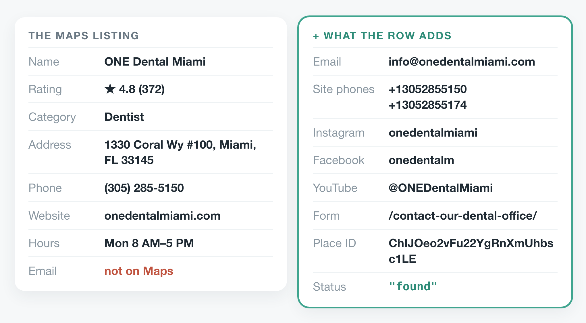
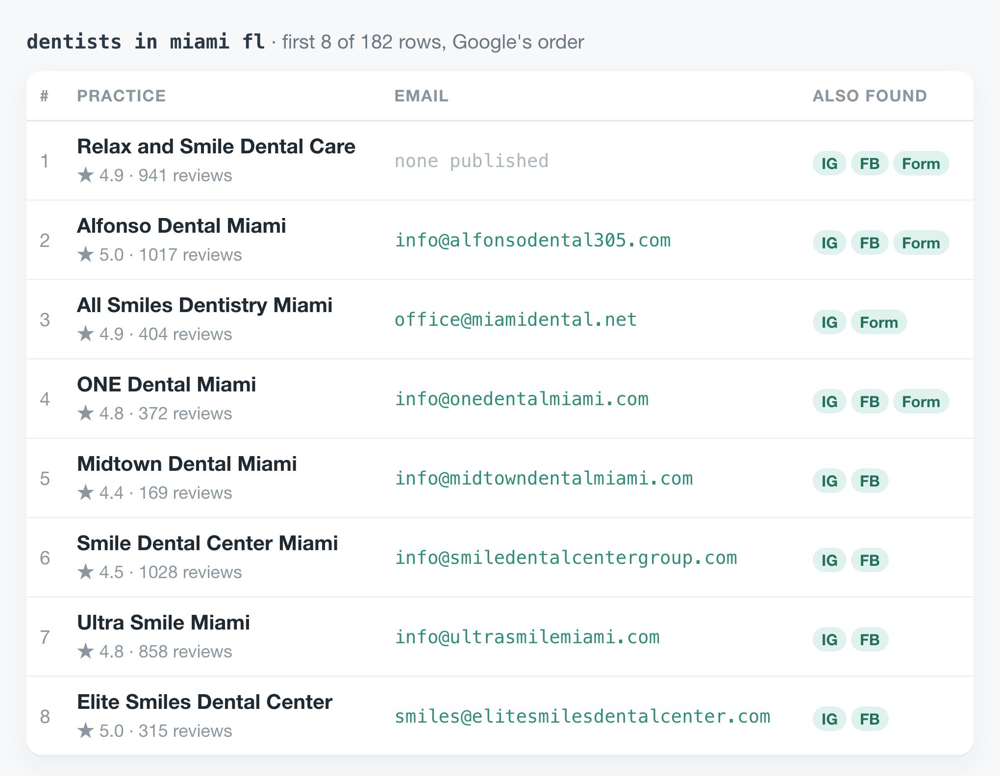
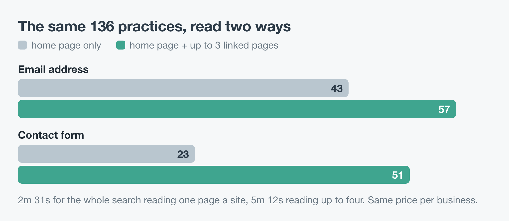

How to get the email of every dentist in Miami from Google Maps
I wrote this with an AI assistant. The runs, numbers and code are real, and I checked them.

Type "dentists in miami fl" into Google Maps and keep scrolling until it stops. The morning I wrote this, it stopped at 182 practices. Google gives you a name, a star rating, an address and a phone number for nearly every one, and a website for 162 of them.
It gives you an email address for none. Maps has no field for one.
The addresses exist. They sit on the practices' own websites, and usually not on the home page. They're on the contact page, the "meet the team" page, or the footer of a page about implants. Collecting them means opening 162 websites and clicking around each one. That's an afternoon of copy and paste, or a scraper.
I build and maintain web scrapers, and this is the one I built for exactly this job. It searches Google Maps, reads each business's own website for emails, phone numbers and social accounts, and hands back one row per business. Below is a real run on that Miami search: the code, what came back, what it cost, and the parts it gets wrong.

One practice from the run. Left: what its Maps listing shows. Right: what reading its website added.The run
The scraper runs on Apify, so the code is a call to Apify's client. You need an Apify account and its API token.
import { ApifyClient } from 'apify-client';
const client = new ApifyClient({ token: process.env.APIFY_TOKEN });
const run = await client
.actor('simple.actor/google-maps-leads')
.call({ queries: ['dentists in miami fl'], maxPlaces: 200 });
const { items } = await client
.dataset(run.defaultDatasetId)
.listItems();
const leads = items.filter((row) => row.email);
maxPlaces: 200 is the most it accepts and more than Google lists for a search, so in practice it means "all of them". The full script writes the leads to a CSV, and there's a Python version that does the same; both are in the repo.
The run took 5 minutes 12 seconds. Most of that was spent waiting on dentists' websites, not on Google.
What came back
182 rows, one per practice, in the order Google ranks them. These are the first eight, exactly as they came back:

The first eight of 182 rows. The top-ranked practice publishes no email address, only phone numbers, social accounts and a form.Across all 182, 20 practices had no website on their listing. They come back with what Maps knows and a status that says so. Of the 162 websites, 144 gave at least one email, phone number or social account.
81 gave an email address. 50 of those were on the practice's own domain, like info@onedentalmiami.com. Of the other 31, 19 were Gmail, Yahoo or Outlook addresses, which is normal for a small practice. 112 practices linked a Facebook page and 102 an Instagram account. 74 had a contact form, and the row carries its URL.
Every row also has a contactsStatus, and it's the field to filter on, because an empty email can mean four different things. Here, 144 rows say found: the website gave an email, a phone number or a social account. 20 say no_website. 16 say unreadable, with the reason in contactsError. And 2 say none_found, meaning the website was read and publishes none of them.
Why it reads more than the home page
The scraper reads each home page plus up to three pages it links to, chosen for how likely they are to carry contact details: contact, about, team, imprint. I wanted to know what those extra pages are worth, so I ran the same search a second time reading the home page only.

Only practices that appeared in both runs are counted, so the comparison is like for like.On the 136 practices both runs returned, the home page alone found 43 email addresses. Reading up to four pages found 57, a third more. Contact forms went from 23 to 51, which makes sense, since a form usually lives on the contact page. The extra pages cost time, 5 minutes 12 seconds against 2 minutes 31. They don't cost money, because the price is per business, not per page.
What it cost
The price is $0.0005 for each business, plus $0.0015 for each business whose website gave contacts. A website that publishes nothing, can't be read, or doesn't exist isn't charged that second part.
For this run that's 182 × $0.0005 + 144 × $0.0015 = $0.31. That's 81 email addresses at under 0.4 cents each, with the phone numbers, social accounts and Place IDs of all 182 practices included.
Where it falls short
Sixteen websites couldn't be read. Eleven refused with a 403, seven of them bot checks that want proof the visitor is a browser. Three didn't answer at all, one was a dead link, and one served a challenge page. Those rows say unreadable, give the reason in contactsError, and still carry the phone and address from Maps.
It doesn't run a browser. A site that draws its page with JavaScript after loading looks empty to it. Two sites here were read and gave nothing, which is either a practice that publishes no contact details or a site like that. From the row alone you can't tell which.
The first address wasn't always the right one. One practice's website still had the help address of the company that made its template sitting in the page, and in this run that came first in emails, ahead of the practice's own Gmail address. I fixed that on 24 October 2026: an address that belongs to the software a site was built with is now left out, and that practice's row leads with its own Gmail. It was one row in 81, but read the addresses before you send anything.
Google's list moves. I ran the same search twice, minutes apart. The first run listed 182 practices, the second 181, and only 136 were in both. If you need every dentist in a city, split the search by neighbourhood (dentists in brickell miami, dentists in coral gables fl) and run it more than once. Within a run, a practice that two searches both find is returned once. Across runs, the placeId on every row is the key to deduplicate on.
The yield depends on where you search. 81 of 182 practices here had an email address. When I tested "zahnarzt berlin mitte", 20 out of 20 did, because German websites must publish an imprint with a contact address.
An email address isn't permission to send. These are addresses practices publish so patients can reach them. Before you write to them, check the rules on unsolicited email where you are and where they are.
The code is in simple-actor/google-maps-email-scraper, in Node and Python, and both write a CSV. The scraper is Google Maps Leads Scraper on Apify. Change the search to your trade and your town: "plumbers in denver co" works the same way.